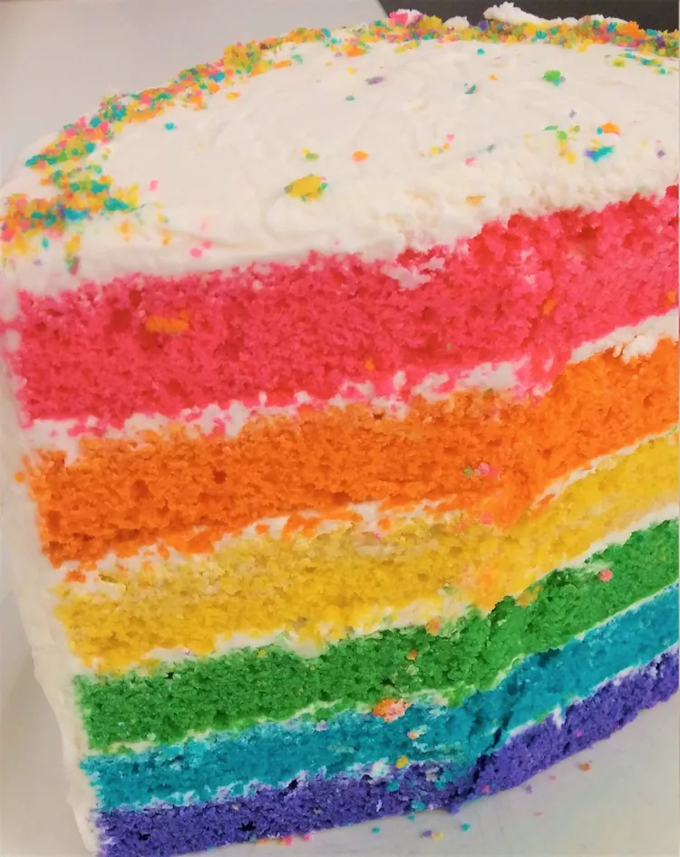

Epic Rainbow Cake

Description
A truly epic cake! This is also epically easy to do, calling for three boxes of cake mix.
Ingredients
- cooking spray
- 3 (18.25 ounce) packages white pudding-type cake mix
- 9 egg whites
- 4 cups water
- 1 cup applesauce
- 2 (16 ounce) cans white frosting
- ½ fluid ounce red gel food coloring, or as desired
- ½ fluid ounce orange gel food coloring, or as desired
- ½ fluid ounce yellow gel food coloring, or as desired
- ½ fluid ounce green gel food coloring, or as desired
- ½ fluid ounce blue gel food coloring, or as desired
- ½ fluid ounce purple gel food coloring, or as desired
Steps
- Preheat the oven to 350 degrees F (175 degrees C). Spray two 9-inch cake pans with cooking spray.
- Combine cake mix, egg whites, water, and applesauce in a large bowl using an electric mixer. Divide batter evenly into 6 bowls. Mix a different food coloring gel into each bowl. Pour the red batter and orange batter separately into the prepared cake pans.
- Bake in the preheated oven until a toothpick inserted into the center of each cake comes out clean, 25 to 30 minutes
- Remove from the oven and let rest on a cooling rack in the pans for 15 minutes. Flip quickly onto the rack and remove cakes from the pans. Continue the baking and cooling process with remaining batter until all layers are cooled.
- Shave off the tops of the cakes carefully using a large knife so they will be flat. Place the red layer down, frost the top lightly; continue with orange, yellow, green, blue, and purple.
- Frost the top and outside of the cake. Cut through using a big, sharp knife and serve.